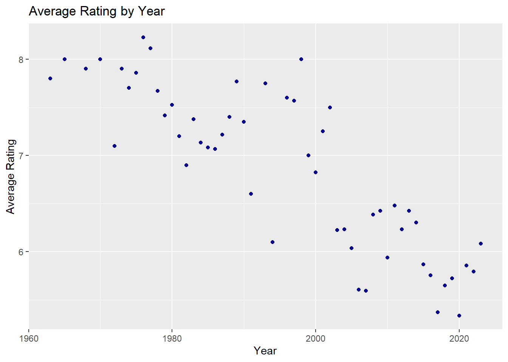
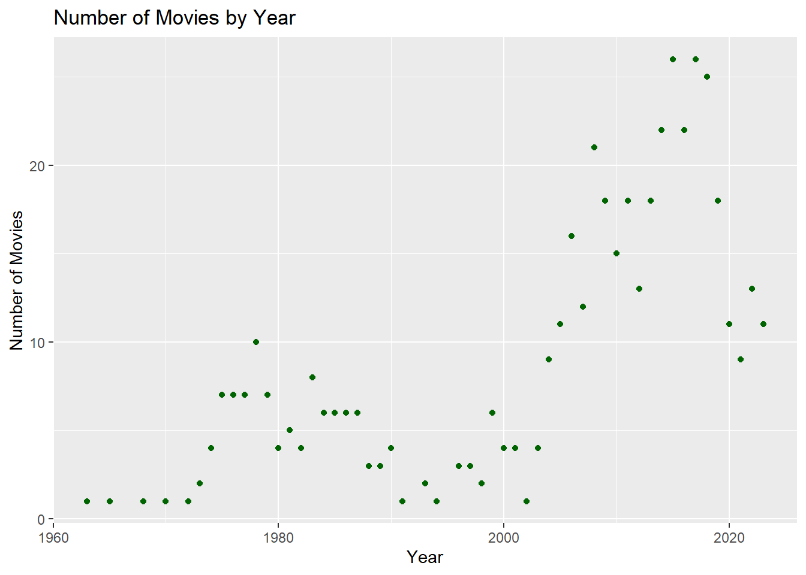
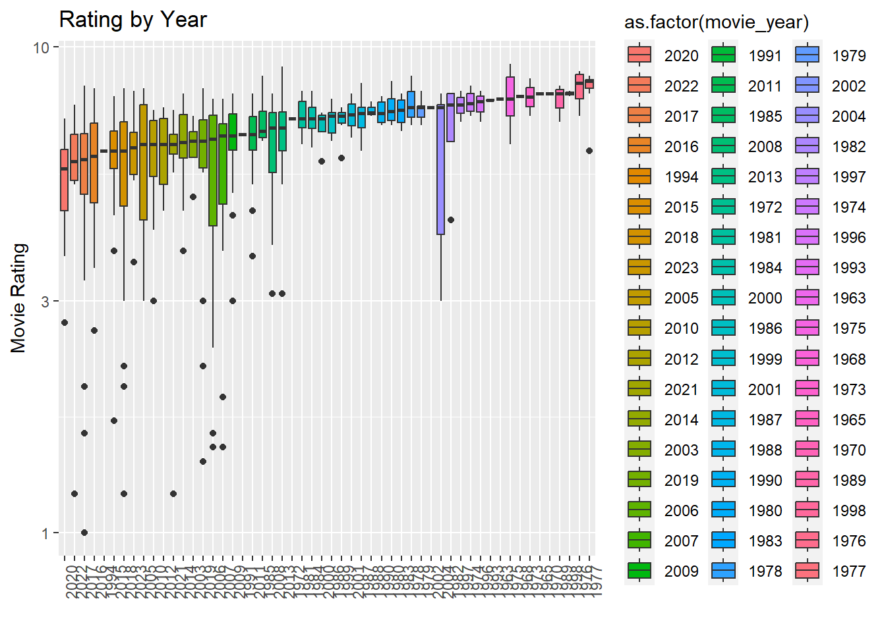
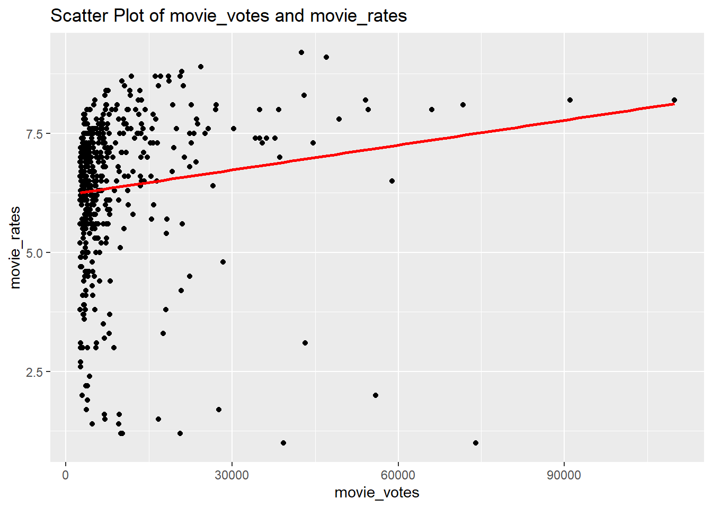
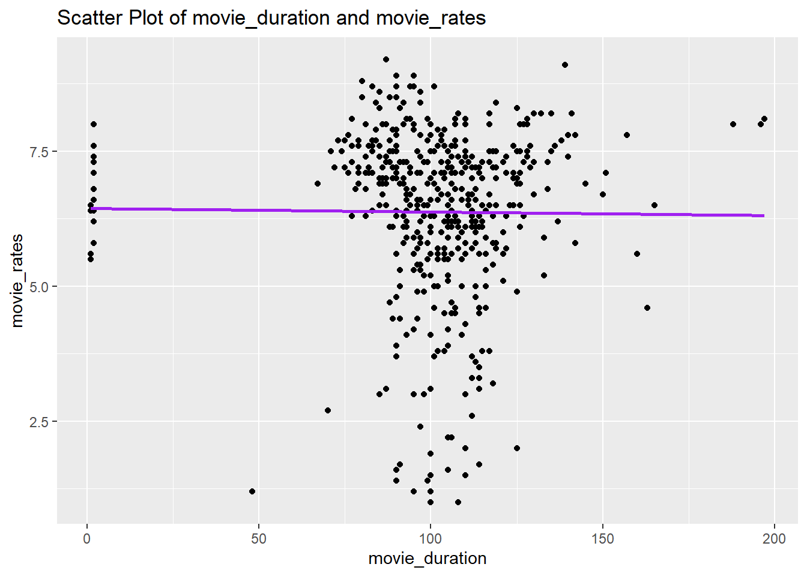

I wrote separate code for the first 5 movies and the last 5 movies in this code. First, I sorted them from most viewed to least viewed (the first table shows the top 5 most viewed films). Then, I sorted them from least viewed to most viewed (the second table shows the bottom 5 least viewed films).
I watched ‘Hababam Sınıfı’ and ‘Hababam Sınıfı Sınıfta Kaldı’. I agree with their IMDb ratings because I think these movies are very entertaining. However, I have not watched other movies, so I cannot comment on them.
# question3 (b)my_fav_movie1 <- my_data_frame |>filter(movie_names =="Yedinci Kogustaki Mucize")my_fav_movie2 <- my_data_frame |>filter(movie_names =="Ayla: The Daughter of War")bind_rows(my_fav_movie1,my_fav_movie2)
movie_names movie_year movie_duration movie_rates movie_votes
1 Yedinci Kogustaki Mucize 2019 132 8.2 54155
2 Ayla: The Daughter of War 2017 125 8.3 42990
Their ratings and voting are high and they watched by lots of people.
# question3 (c)# scatter plot_1asc_order <- my_data_frame |>arrange(movie_year)avg_rating_year <- asc_order |>group_by(movie_year)|>summarise(avg_rating =mean(movie_rates))avg_rating_year|>ggplot(aes(movie_year,avg_rating)) +geom_point(color="darkblue") +xlab("Year") +ylab("Average Rating") +ggtitle("Average Rating by Year")

# scatter plot_2number_of_movie <- my_data_frame |>group_by(movie_year) |>summarise(movie_number =length(movie_names)) number_of_movie |>ggplot(aes(movie_year,movie_number)) +geom_point(color="darkgreen")+xlab("Year") +ylab("Number of Movies") +ggtitle("Number of Movies by Year")

# box plotmy_data_frame |>mutate(movie_year =reorder(movie_year, movie_rates, FUN = median)) |>ggplot(aes(x =as.factor(movie_year), y = movie_rates, fill =as.factor(movie_year))) +geom_boxplot() +xlab("Movie Year") +ylab("Movie Rating") +ggtitle("Rating by Year") +theme(axis.text.x =element_text(angle=90, hjust =1)) +xlab("") +scale_y_continuous(trans ="log10")

The first two plot is scatter plots and the last one is a box-plot. If we look at the median values of these box plots, we can easily see that the highest rating belongs to the year of 1977, while the lowest rating belongs to the year of 2020.We observe that in the year 2006, the movie rating range is particularly wide. In my opinion, older movies are better than newer ones, and the graph is also confirms my assumption.
# question3 (d)my_data_frame |>ggplot(aes(movie_votes,movie_rates)) +geom_point() +geom_smooth(method ="lm", se =FALSE,color="red") +ggtitle("Scatter Plot of movie_votes and movie_rates")
`geom_smooth()` using formula = 'y ~ x'

There is a correlation between the number of votes and the ratings.As the number of votes increases, ratings also increase slightly.
# question3 (e)my_data_frame |>ggplot(aes(movie_duration,movie_rates)) +geom_point() +geom_smooth(method ="lm", se =FALSE,color="purple") +ggtitle("Scatter Plot of movie_duration and movie_rates")
`geom_smooth()` using formula = 'y ~ x'

There is no correlation between the ratings and the duration.
The first table is a new table and the second table is my previous table. 11 movies ranking is not the same as the first 11 highest-rated movies in my initial data frame. I think the reason for this is that IMDb’s top 1000 movies list may not be based solely on ratings.
According to my research, IMDb’s calculation method for the movies depends on,
R = average for the movie (mean) = (rating)
v = number of votes for the movie = (votes)
m = minimum votes required to be listed in the Top Rated 1000 list
C = the mean vote across the whole report these parameters respectively, and the calculated as;
weighted rating (WR) = (v ÷ (v+m)) × R + (m ÷ (v+m)) × C
NOTES: I write get_minute <- strsplit(duration, “h|\s|m”)[[1]] line of code with the help of AI and I found function(html) function with the help of AI.